POWER TRANSFORMERS
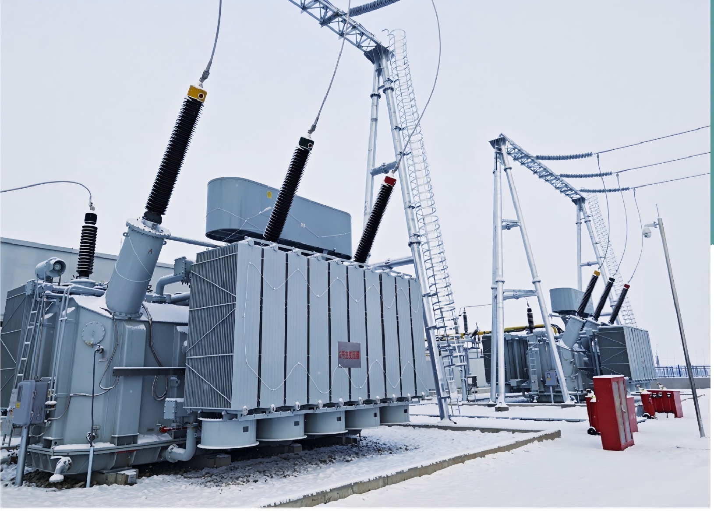
TIANYU ELECTRIC
Product Catalog
Transformers · Prefabricated Substations · Combined TransformersExport edition · 2026PRODUCT PORTFOLIO
Transformer and substation platforms
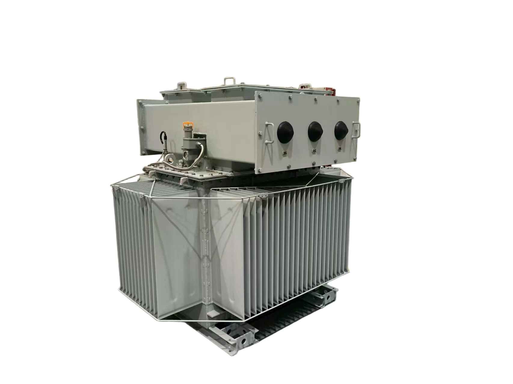
DISTRIBUTION TRANSFORMERS
Oil-Immersed Distribution Transformer
S(B)20 / S(B)22 platform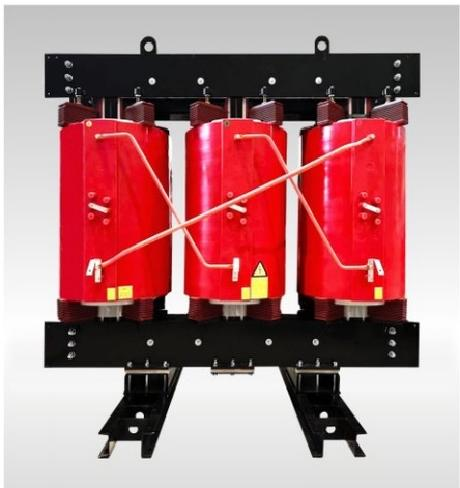
DRY-TYPE TRANSFORMERS
Cast Resin Dry-Type Transformer
35 kV and below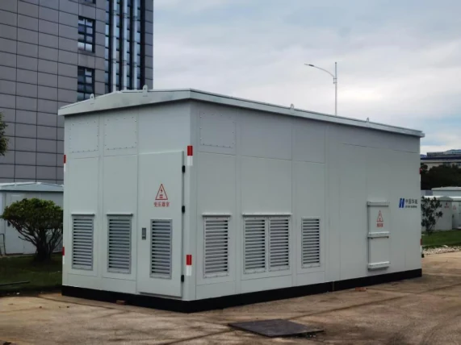
PREFABRICATED SUBSTATIONS
Dry-Type Prefabricated Substation
YB · 200–8,000 kVA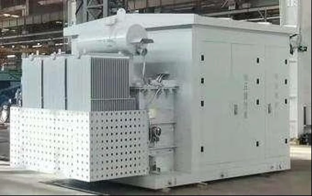
PREFABRICATED SUBSTATIONS
Oil-Immersed Prefabricated Substation
YBH · 200–12,500 kVA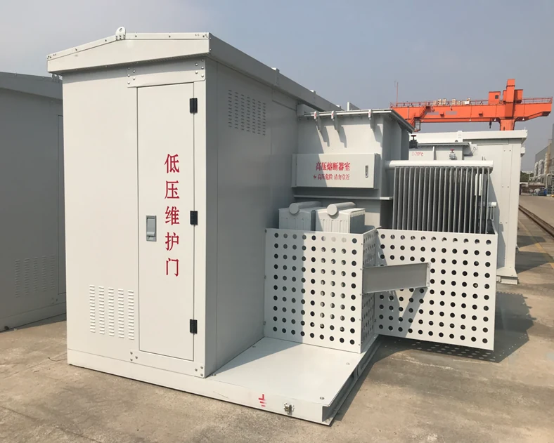
COMBINED TRANSFORMERS
American-Type Combined Transformer
ZGS · 200–4,000 kVAPOWER TRANSFORMERS
High-Voltage Power Transformer
Oil-immersed power transformers for utility substations, grid interconnection and major industrial systems.
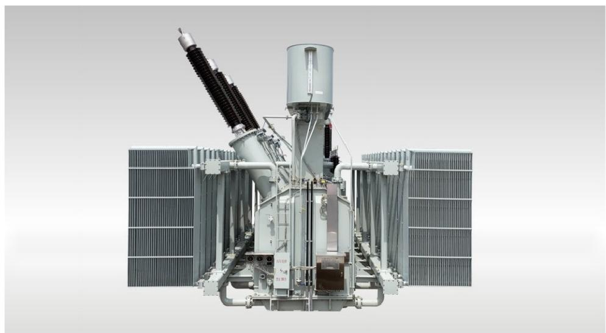
PRODUCT RANGE
High-Voltage Power Transformer range
| Series | Capacity | Voltage | Configuration |
|---|---|---|---|
| 35 kV On-Load Voltage Regulating Power Transformer | 8-31.5 MVA | HV 35-38.5 kV · LV 6.3 / 6.6 / 10.5 kV | Tap ±3×2.5% · YNd11 / Dyn11 |
| 66 kV On-Load Voltage Regulating Power Transformer | 6.3-63 MVA | HV 63 / 66 / 69 kV · LV 6.3 / 6.6 / 10.5 kV | Tap ±4×1.25% / ±6×1.25% / ±8×1.25% · YNd11 / Dyn11 |
| 110 kV Three-Winding On-Load Voltage Regulating Power Transformer | 6.3-63 MVA | HV 110 / 115 / 121 kV · MV 36 / 37 / 38.5 kV · LV 6.3 / 6.6 / 10.5 / 21 kV | Tap ±4×1.25% / ±6×1.25% / ±8×1.25% · YNyn0d11 |
| 220 kV Three-Winding On-Load Voltage Regulating Power Transformer | 31.5-240 MVA | HV 220 / 230 / 242 kV · MV 69 / 115 / 121 kV · LV 6.3 / 6.6 / 10.5 / 21 / 36 / 37 / 38.5 kV | Tap ±4×1.25% / ±6×1.25% / ±8×1.25% · YNyn0d11 |
TECHNICAL PARAMETERS
High-Voltage Power Transformer parameter table
35 kV On-Load Voltage Regulating Power Transformer
| Capacity (kVA) | No-load loss (kW) | Load loss (kW) | I0 (%) | Z (%) | Dimensions (mm) | Weight (kg) |
|---|---|---|---|---|---|---|
| 8000 | 4.3 | 36.5 | 0.32 | 7.5/8.0 | 4400×3820×3390 | 17300 |
| 10000 | 5.1 | 43.2 | 0.32 | 7.5/8.0 | 4470×3850×3540 | 20100 |
| 12500 | 6.0 | 51.1 | 0.28 | 7.5/8.0 | 4870×4340×3690 | 24100 |
| 16000 | 7.2 | 63.3 | 0.28 | 7.5/8.0 | 5040×4050×3790 | 28300 |
| 20000 | 8.5 | 74.4 | 0.28 | 7.5/8.0 | 5260×4130×3820 | 34430 |
| 25000 | 10.1 | 88.0 | 0.24 | 10.0 | 5560×4370×4040 | 40700 |
| 31500 | 12.0 | 104.4 | 0.24 | 10.0 | 6060×4430×4110 | 45200 |
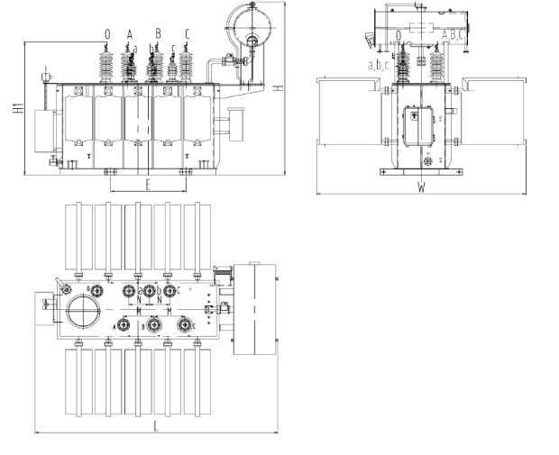
TECHNICAL PARAMETERS
High-Voltage Power Transformer parameter table
66 kV On-Load Voltage Regulating Power Transformer
| Capacity (kVA) | No-load loss (kW) | Load loss (kW) | I0 (%) | Z (%) | Dimensions (mm) | Weight (kg) |
|---|---|---|---|---|---|---|
| 6300 | 4.4 | 30.8 | 0.48 | 9.0 | 5275×3390×3932 | 21270 |
| 8000 | 5.3 | 36.5 | 0.48 | 9.0 | 5375×3510×4027 | 23970 |
| 12500 | 7.4 | 51.1 | 0.45 | 9.0 | 5545×3660×4216 | 29870 |
| 20000 | 10.6 | 76.1 | 0.42 | 9.0 | 6010×4100×4461 | 39780 |
| 31500 | 14.8 | 108.0 | 0.35 | 9.0 | 6330×4460×4725 | 52840 |
| 50000 | 20.9 | 150.3 | 0.32 | 10.0-12.0 | 6681×4830×5045 | 69820 |
| 63000 | 24.7 | 178.2 | 0.29 | 10.0-12.0 | 6841×4980×5280 | 80390 |
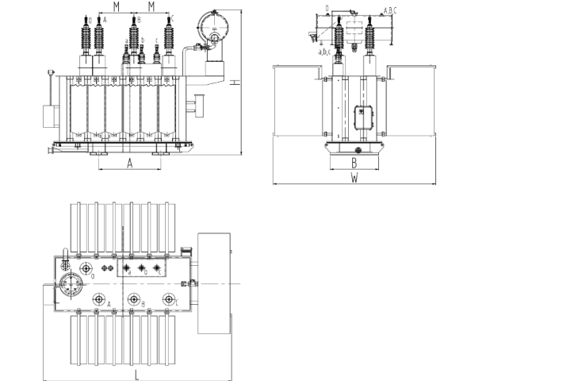
DISTRIBUTION TRANSFORMERS
Oil-Immersed Distribution Transformer
Oil-immersed distribution transformers for utility, renewable-energy and industrial networks.
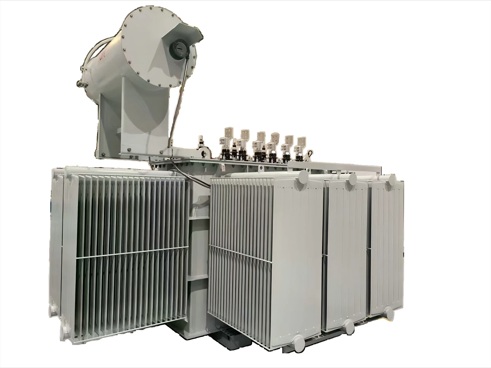
TECHNICAL PARAMETERS
Oil-Immersed Distribution Transformer parameter table
12 kV oil-immersed distribution transformer parameters · 30–500 kVA
| Capacity (kVA) | No-load loss (kW) | Load loss (kW) | I0 (%) | Z (%) | L×W×H (mm) | Weight (kg) |
|---|---|---|---|---|---|---|
| 30 | 0.065 | 0.455 | 1.20 | 4 | 630×380×600 | 350 |
| 50 | 0.080 | 0.655 | 1.04 | 4 | 730×400×680 | 400 |
| 63 | 0.090 | 0.785 | 0.96 | 4 | 750×430×690 | 570 |
| 80 | 0.105 | 0.945 | 0.96 | 4 | 780×430×700 | 600 |
| 100 | 0.120 | 1.140 | 0.88 | 4 | 800×450×730 | 650 |
| 125 | 0.135 | 1.360 | 0.88 | 4 | 850×490×750 | 700 |
| 160 | 0.160 | 1.665 | 0.80 | 4 | 950×550×900 | 830 |
| 200 | 0.190 | 1.970 | 0.80 | 4 | 1050×600×930 | 900 |
| 250 | 0.230 | 2.300 | 0.72 | 4 | 1080×600×950 | 1000 |
| 315 | 0.270 | 2.760 | 0.72 | 4 | 1200×750×1000 | 1210 |
| 400 | 0.330 | 3.250 | 0.64 | 4 | 1350×880×1190 | 1450 |
| 500 | 0.385 | 3.900 | 0.64 | 4 | 1400×910×1230 | 1680 |
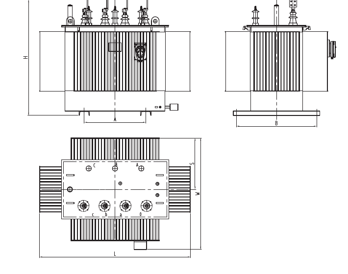
TECHNICAL PARAMETERS
Oil-Immersed Distribution Transformer parameter table
12 kV oil-immersed distribution transformer parameters · 630–2500 kVA
| Capacity (kVA) | No-load loss (kW) | Load loss (kW) | I0 (%) | Z (%) | L×W×H (mm) | Weight (kg) |
|---|---|---|---|---|---|---|
| 630 | 0.460 | 4.460 | 0.48 | 4.5 | 1500×950×1270 | 1980 |
| 800 | 0.560 | 5.400 | 0.48 | 4.5 | 1830×1220×1270 | 2470 |
| 1000 | 0.660 | 7.415 | 0.48 | 4.5 | 1790×1290×1380 | 2680 |
| 1250 | 0.780 | 8.640 | 0.40 | 4.5 | 1820×1350×1450 | 3110 |
| 1600 | 0.940 | 10.44 | 0.40 | 4.5 | 1960×1480×1500 | 3850 |
| 2000 | 1.085 | 13.18 | 0.32 | 5 | 2020×1450×1550 | 4600 |
| 2500 | 1.280 | 15.27 | 0.32 | 5 | 2090×1510×1290 | 5550 |
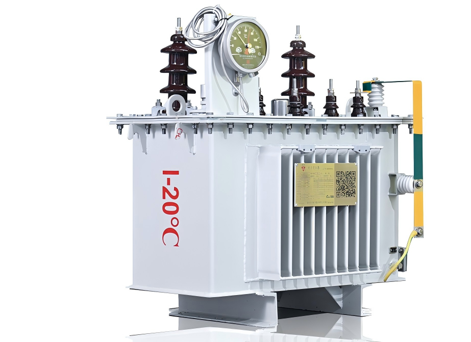
TECHNICAL PARAMETERS
Oil-Immersed Distribution Transformer parameter table
40.5 kV renewable-energy transformer parameters
| Capacity (kVA) | No-load loss (kW) | Load loss (kW) | I0 (%) | Z (%) |
|---|---|---|---|---|
| 1000 | 0.6 | 10.4 | 0.52 | 6–14 |
| 1250 | 0.8 | 12.5 | 0.44 | 6–14 |
| 1600 | 0.9 | 14.9 | 0.36 | 6–14 |
| 2000 | 1.2 | 16.5 | 0.36 | 6–14 |
| 2500 | 1.4 | 17.6 | 0.36 | 6–14 |
| 3000 | 1.6 | 20.3 | 0.36 | 6–14 |
| 3150 | 1.7 | 20.7 | 0.36 | 6–14 |
| 4000 | 2.0 | 24.6 | 0.36 | 6–14 |
| 4500 | 2.2 | 27.1 | 0.36 | 6–14 |
| 5000 | 2.4 | 28.2 | 0.36 | 6–14 |
| 5500 | 2.6 | 30.3 | 0.36 | 6–14 |
| 6300 | 2.9 | 31.5 | 0.36 | 6–14 |
| 8000 | 4.0 | 34.6 | 0.28 | 6–14 |
| 10000 | 4.8 | 40.8 | 0.28 | 6–14 |
| 12500 | 5.6 | 50.7 | 0.24 | 6–14 |
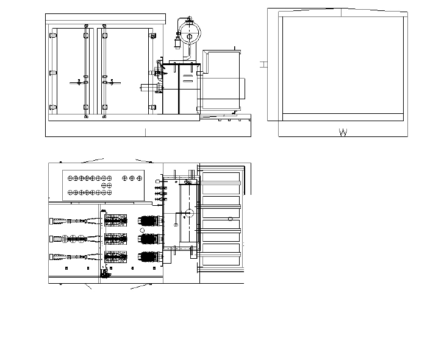
DRY-TYPE TRANSFORMERS
Cast Resin Dry-Type Transformer
Cast-resin dry-type transformers for indoor distribution, commercial buildings and industrial loads.
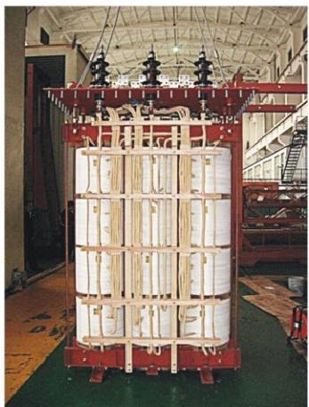
TECHNICAL PARAMETERS
Cast Resin Dry-Type Transformer parameter table
SC(B)14 / SC(B)18 silicon-steel series · 30–500 kVA · 10 / 10.5 / 11 kV to 0.4 kV · ±5% / ±2×2.5% · Yyn0 / Dyn11
| Capacity (kVA) | SCB18 no-load W / I0 (%) | SCB18 load loss @130 / 155 / 180°C (W) | SCB14 no-load W / I0 (%) | SCB14 load loss @130 / 155 / 180°C (W) | Z (%) |
|---|---|---|---|---|---|
| 30 | 105 / 1.46 | 605 / 640 / 685 | 130 / 1.46 | 605 / 640 / 685 | 4 |
| 50 | 155 / 1.46 | 845 / 900 / 965 | 185 / 1.46 | 845 / 900 / 965 | 4 |
| 80 | 210 / 1.09 | 1160 / 1240 / 1330 | 250 / 1.09 | 1160 / 1240 / 1330 | 4 |
| 100 | 230 / 1.09 | 1330 / 1415 / 1520 | 270 / 1.09 | 1330 / 1415 / 1520 | 4 |
| 125 | 270 / 0.95 | 1565 / 1665 / 1780 | 320 / 0.95 | 1565 / 1665 / 1780 | 4 |
| 160 | 310 / 0.95 | 1800 / 1915 / 2050 | 365 / 0.95 | 1800 / 1915 / 2050 | 4 |
| 200 | 360 / 0.8 | 2135 / 2275 / 2440 | 420 / 0.8 | 2135 / 2275 / 2440 | 4 |
| 250 | 415 / 0.8 | 2330 / 2485 / 2665 | 490 / 0.8 | 2330 / 2485 / 2665 | 4 |
| 315 | 510 / 0.73 | 2945 / 3125 / 3355 | 600 / 0.73 | 2945 / 3125 / 3355 | 4 |
| 400 | 570 / 0.73 | 3375 / 3590 / 3850 | 665 / 0.73 | 3375 / 3590 / 3850 | 4 |
| 500 | 670 / 0.73 | 4130 / 4390 / 4705 | 790 / 0.73 | 4130 / 4390 / 4705 | 4 |
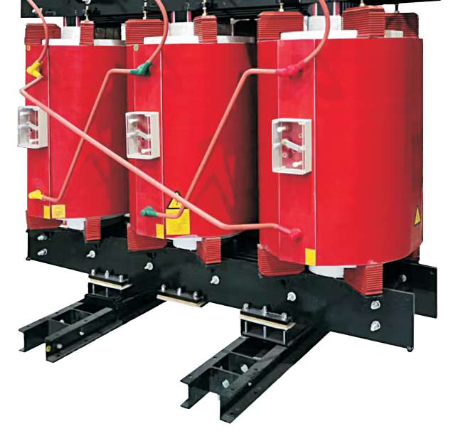
TECHNICAL PARAMETERS
Cast Resin Dry-Type Transformer parameter table
SC(B)14 / SC(B)18 silicon-steel series · 630–2500 kVA · 10 / 10.5 / 11 kV to 0.4 kV · ±5% / ±2×2.5% · Yyn0 / Dyn11
| Capacity (kVA) | SCB18 no-load W / I0 (%) | SCB18 load loss @130 / 155 / 180°C (W) | SCB14 no-load W / I0 (%) | SCB14 load loss @130 / 155 / 180°C (W) | Z (%) |
|---|---|---|---|---|---|
| 630* | 775 / 0.62 | 4975 / 5290 / 5660 | 910 / 0.62 | 4975 / 5290 / 5660 | 6–8 |
| 630 | 750 / 0.62 | 5050 / 5365 / 5760 | 885 / 0.62 | 5050 / 5365 / 5760 | 6–8 |
| 800 | 875 / 0.62 | 5895 / 6265 / 6715 | 1035 / 0.62 | 5895 / 6265 / 6715 | 6–8 |
| 1000 | 1020 / 0.62 | 6885 / 7315 / 7885 | 1205 / 0.62 | 6885 / 7315 / 7885 | 6–8 |
| 1250 | 1205 / 0.62 | 8190 / 8720 / 9335 | 1420 / 0.62 | 8190 / 8720 / 9335 | 6–8 |
| 1600 | 1415 / 0.62 | 9945 / 10555 / 11320 | 1665 / 0.62 | 9945 / 10555 / 11320 | 6–8 |
| 2000 | 1760 / 0.51 | 12240 / 13005 / 14005 | 2075 / 0.51 | 12240 / 13005 / 14005 | 6–8 |
| 2500 | 2080 / 0.51 | 14535 / 15445 / 16605 | 2450 / 0.51 | 14535 / 15445 / 16605 | 6–8 |
TECHNICAL PARAMETERS
Cast Resin Dry-Type Transformer parameter table
SC(B)H17 / SC(B)H19 amorphous-alloy series · 30–500 kVA · 10 / 10.5 / 11 kV to 0.4 kV · ±5% / ±2×2.5% · Yyn0 / Dyn11
| Capacity (kVA) | SCBH19 no-load W / I0 (%) | SCBH19 load loss @130 / 155 / 180°C (W) | SCBH17 no-load W / I0 (%) | SCBH17 load loss @130 / 155 / 180°C (W) | Z (%) |
|---|---|---|---|---|---|
| 30 | 50 / 1.6 | 605 / 640 / 685 | 60 / 1.6 | 605 / 640 / 685 | 4 |
| 50 | 60 / 1.4 | 845 / 900 / 965 | 75 / 1.4 | 845 / 900 / 965 | 4 |
| 80 | 85 / 1.3 | 1160 / 1240 / 1330 | 100 / 1.3 | 1160 / 1240 / 1330 | 4 |
| 100 | 90 / 1.2 | 1330 / 1415 / 1520 | 110 / 1.2 | 1330 / 1415 / 1520 | 4 |
| 125 | 105 / 1.1 | 1565 / 1665 / 1780 | 130 / 1.1 | 1565 / 1665 / 1780 | 4 |
| 160 | 120 / 1.1 | 1800 / 1915 / 2050 | 145 / 1.1 | 1800 / 1915 / 2050 | 4 |
| 200 | 140 / 1 | 2135 / 2275 / 2440 | 170 / 1 | 2135 / 2275 / 2440 | 4 |
| 250 | 160 / 1 | 2330 / 2485 / 2665 | 195 / 1 | 2330 / 2485 / 2665 | 4 |
| 315 | 195 / 0.9 | 2945 / 3125 / 3355 | 235 / 0.9 | 2945 / 3125 / 3355 | 4 |
| 400 | 215 / 0.8 | 3375 / 3590 / 3850 | 265 / 0.8 | 3375 / 3590 / 3850 | 4 |
| 500 | 250 / 0.8 | 4130 / 4390 / 4705 | 305 / 0.8 | 4130 / 4390 / 4705 | 4 |
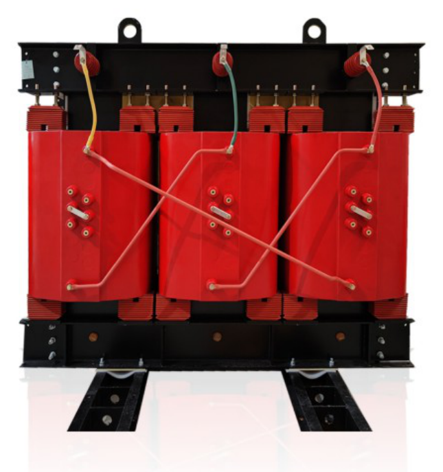
TECHNICAL PARAMETERS
Cast Resin Dry-Type Transformer parameter table
SC(B)H17 / SC(B)H19 amorphous-alloy series · 630–2500 kVA · 10 / 10.5 / 11 kV to 0.4 kV · ±5% / ±2×2.5% · Yyn0 / Dyn11
| Capacity (kVA) | SCBH19 no-load W / I0 (%) | SCBH19 load loss @130 / 155 / 180°C (W) | SCBH17 no-load W / I0 (%) | SCBH17 load loss @130 / 155 / 180°C (W) | Z (%) |
|---|---|---|---|---|---|
| 630* | 295 / 0.7 | 4975 / 5290 / 5660 | 360 / 0.7 | 4975 / 5290 / 5660 | 6–8 |
| 630 | 290 / 0.7 | 5050 / 5365 / 5760 | 350 / 0.7 | 5050 / 5365 / 5760 | 6–8 |
| 800 | 335 / 0.7 | 5895 / 6265 / 6715 | 410 / 0.7 | 5895 / 6265 / 6715 | 6–8 |
| 1000 | 385 / 0.6 | 6885 / 7315 / 7885 | 470 / 0.6 | 6885 / 7315 / 7885 | 6–8 |
| 1250 | 455 / 0.6 | 8190 / 8720 / 9335 | 550 / 0.6 | 8190 / 8720 / 9335 | 6–8 |
| 1600 | 530 / 0.6 | 9945 / 10555 / 11320 | 645 / 0.6 | 9945 / 10555 / 11320 | 6–8 |
| 2000 | 700 / 0.5 | 12240 / 13005 / 14005 | 850 / 0.5 | 12240 / 13005 / 14005 | 6–8 |
| 2500 | 840 / 0.5 | 14535 / 15445 / 16605 | 1020 / 0.5 | 14535 / 15445 / 16605 | 6–8 |
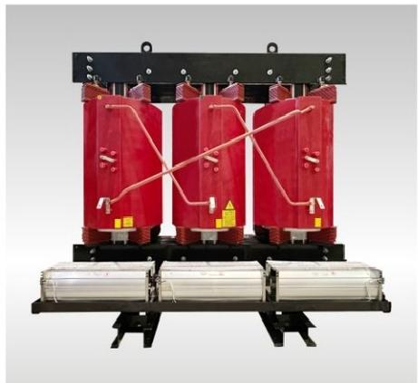
PREFABRICATED SUBSTATIONS
Dry-Type Prefabricated Substation
Factory-assembled dry-type substations combining high-voltage, transformer and low-voltage equipment.
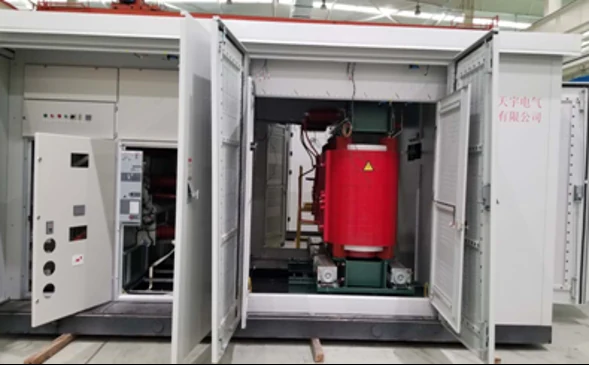
TECHNICAL PARAMETERS
Dry-Type Prefabricated Substation parameter table
YB European-type prefabricated substation parameters
| Item | Unit | Parameter |
|---|---|---|
| Rated voltage | kV | LV 0.315–1.14 · HV 7.2–40.5 |
| Rated frequency | Hz | 50 |
| Rated capacity | kVA | 200–8,000 |
| Rated short-time withstand voltage | kV/1 min | 5 (LV) · 85 (HV) |
| Protection grade | — | IP33 · IP43 · IP54 · IP65 |
| Energy efficiency level | — | Grade 1–3 |
| Transformer type | — | Dry-type or oil-immersed transformer |
| High-voltage switchgear | — | Air cabinet, C-GIS, handcart or fixed type; load switch, fuse, circuit breaker and metering options |
| Low-voltage switchgear | — | Fixed or drawer type; incoming, outgoing, compensation and metering options |
| Breaking current | kA | LV 50–100 · HV 20–40 |
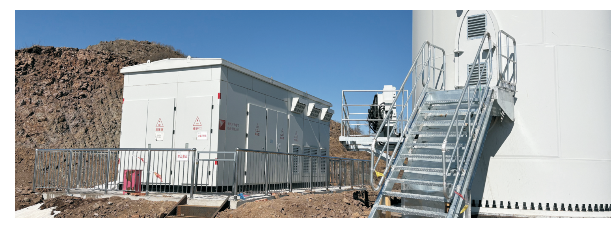
PREFABRICATED SUBSTATIONS
Oil-Immersed Prefabricated Substation
Compact oil-immersed substations for renewable-energy collection and outdoor distribution.
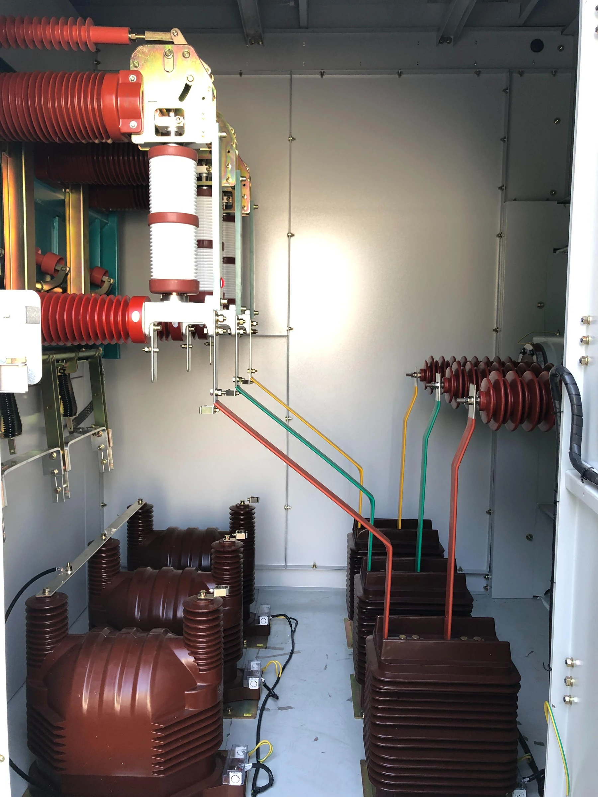
TECHNICAL PARAMETERS
Oil-Immersed Prefabricated Substation parameter table
YBH Chinese-type prefabricated substation parameters
| Item | Unit | Parameter |
|---|---|---|
| Rated voltage | kV | LV 0.315–1.14 · HV 7.2–40.5 |
| Rated frequency | Hz | 50 |
| Rated capacity | kVA | 200–12,500 |
| Rated short-time withstand voltage | kV/1 min | 5 (LV) · 85 (HV) |
| Protection grade | — | IP33 · IP43 · IP54 · IP65 |
| Energy efficiency level | — | Grade 1–3 |
| Transformer type | — | Dry-type or oil-immersed transformer |
| High-voltage switchgear | — | Air cabinet, C-GIS, handcart or fixed type; load switch, fuse, circuit breaker and metering options |
| Low-voltage switchgear | — | Fixed or drawer type; incoming, outgoing, compensation and metering options |
| Breaking current | kA | LV 50–100 · HV up to 31.5 |
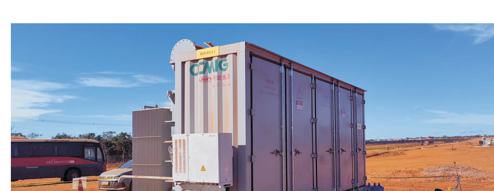
COMBINED TRANSFORMERS
American-Type Combined Transformer
Compact integrated transformer packages for pad-mounted renewable-energy and distribution applications.
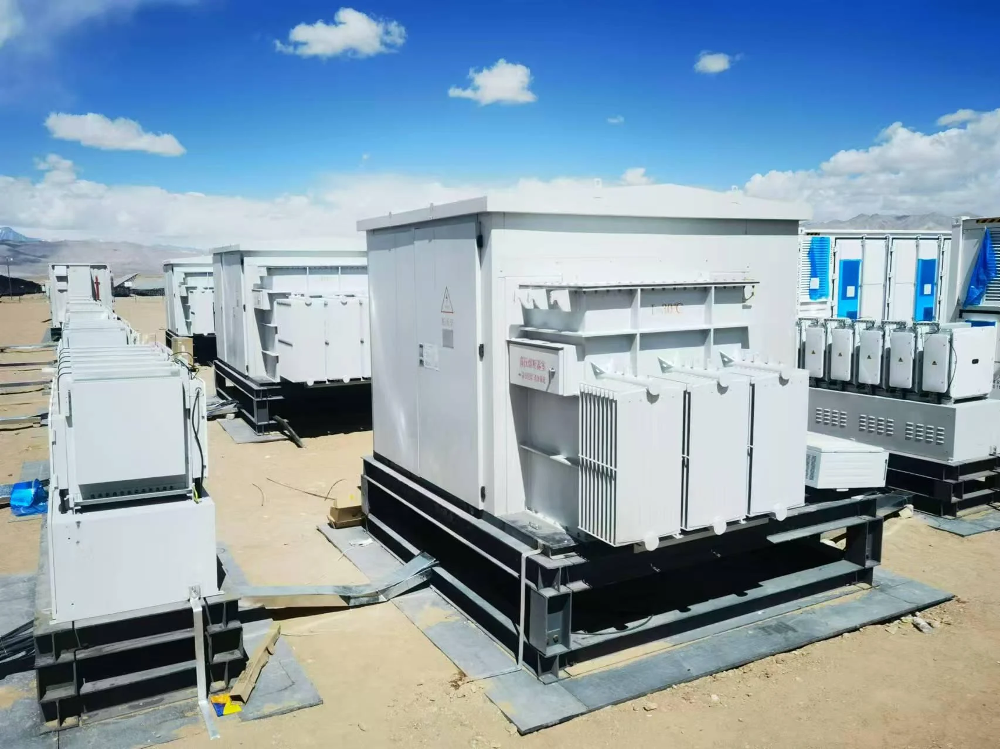
TECHNICAL PARAMETERS
American-Type Combined Transformer parameter table
ZGS American-type combined transformer parameters
| Item | Unit | Parameter |
|---|---|---|
| Rated voltage | kV | LV 0.315–1.14 · HV 7.2–40.5 |
| Rated frequency | Hz | 50 |
| Rated capacity | kVA | 200–4,000 |
| Rated short-time withstand voltage | kV/1 min | 5 (LV) · 85 (HV) |
| Protection grade | — | Below IP65 |
| Energy efficiency level | — | Grade 1–3 |
| Transformer type | — | Oil-immersed integrated transformer |
| Switch type | — | LV fixed type; HV oil-immersed load switch + fuse |
| Breaking current | kA | LV 50–100 · HV 20–40 |
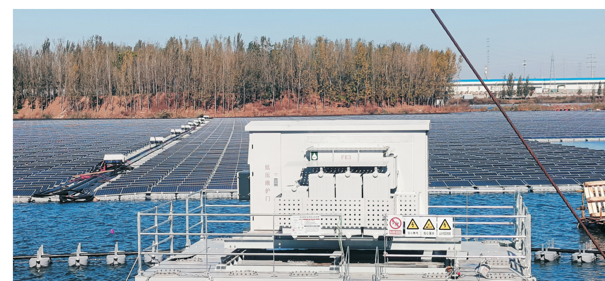
SPECIAL PRODUCT PLATFORMS
Application-led product configurations
These configurations extend the main transformer and substation range for renewable-energy, mobile-supply and offshore applications.
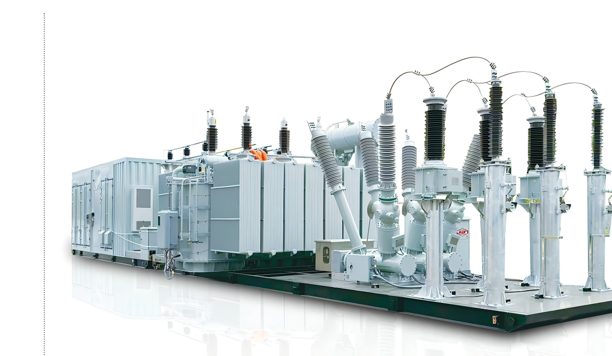
Mobile intelligent substation
Vehicle-mounted / towable system for temporary supply and emergency restoration.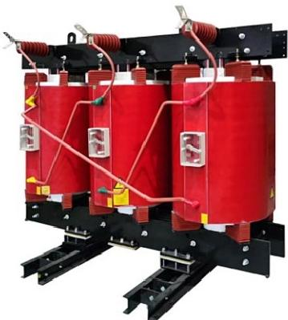
ZBS / ZBSCB rectifier transformer
Oil-immersed or dry-type rectifier transformer configurations for industrial DC systems.SC(B)H17 / SC(B)H19 amorphous-alloy transformer
Energy-saving dry-type transformer family with an amorphous-alloy core for low no-load loss.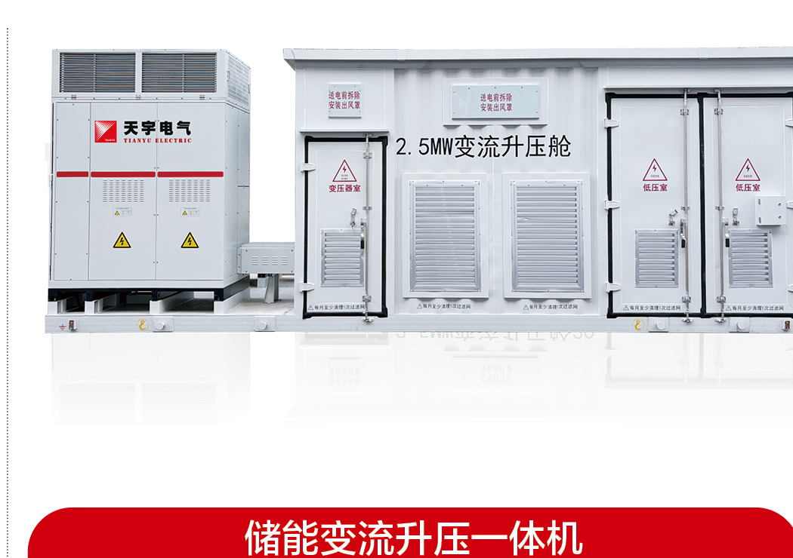
PV / BESS integrated station
Factory-integrated converter or inverter, transformer and medium-voltage switchgear package.TECHNICAL REVIEW
Information required for quotation
Electrical ratingsRated power, HV / MV / LV voltage, frequency, phase, vector group
PerformanceImpedance, no-load loss, load loss, temperature rise, sound and efficiency target
Insulation and regulationInsulation levels, tap range, OLTC or off-circuit tapping
InstallationIndoor / outdoor, altitude, ambient temperature, coastal or corrosive environment
InterfacesBushings, cable entry, switchgear, protection, metering, monitoring and communications
DocumentsSingle-line diagram, tender specification, site layout, load profile and harmonic data